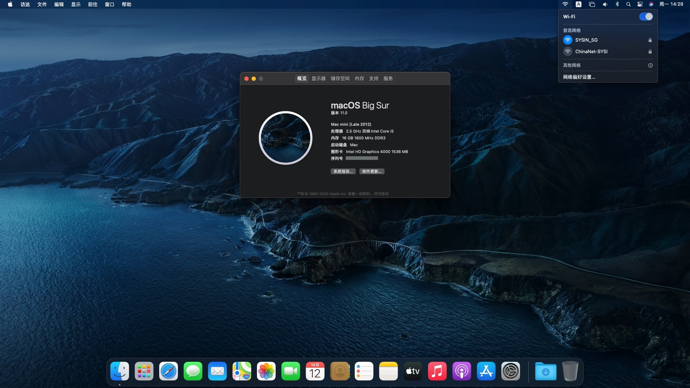
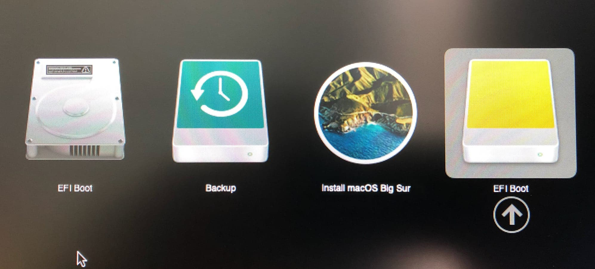
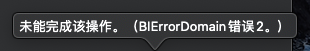

请访问原文链接：在不受支持的 Mac 上安装 macOS Big Sur 11.0 正式版，查看最新版。转载请保留出处。
作者：gc(at)sysin.org，主页：www.sysin.org
macfz：请停止抄袭！
2020.11.18 更新：修正了两种安装方式的操作逻辑，相互没有依赖关系。
2020.12.10 更新：增加了补丁工具的百度网盘存档，方便下载。
2020.12.10 更新：增加一个章节“系统升级”。
友情提示：安装系统前请备份数据！
笔者测试一台 Mac mini 2012 later，已经不在 Big Sur 官方支持列表，使用下面的方法，已经可以完美运行 Big Sur。

1. macOS Big Sur 正式版发布
macOS Big Sur
派新风貌，
一切任施展。
macOS Big Sur 将强大实力和优美外观的结合提升到一个崭新的高度。精心雕琢的全新设计，让你能淋漓尽致地感受 Mac 的魅力；Safari 浏览器迎来重大更新，待你饱览；地图 app 和信息 app 满载新功能，任你探索；更透明的隐私权限，保护也更周到。
macOS Big Sur 11 release date: 2020.11.12
2. 官方支持的列表
MacBook 2015 and later Learn more
MacBook Air 2013 and later Learn more
MacBook Pro Late 2013 and later Learn more
Mac mini 2014 and later Learn more
iMac 2014 and later Learn more
iMac Pro 2017 and later (all models)
Mac Pro 2013 and later Learn more
3. 不受支持的机型及问题
根据 macrumors 的总结，不受支持的 Mac 具体又分几种情况：
（1）官方支持 macOS Catalina 但不受 macOS Big Sur 支持的 Mac 机型
– 这些 Mac 都能正常运行 Big Sur，但是 Wi-Fi 无法正常工作。（这类机型最容易通过补丁完美运行 Big Sur，目前仅仅是 Wi-Fi 的问题。）
可以按照下面的操作步骤，本文主要针对这类机型。
- 2012 and Early 2013 MacBook Pro
- MacBookPro9,x
- MacBookPro10,x
- 2012 MacBook Air
- MacBookAir5,x
- 2012 and 2013 iMac
- iMac13,x
- iMac14,x
- 2012 Mac mini
- Macmini6,x
- 2010-2012 Mac Pro*
- MacPro4,1
- MacPro5,1
*Not officially supported in macOS Catalina, but are fully capable of running both Catalina and Big Sur with a Metal-compatible GPU and upgraded Wifi/BT card.
（2）Mac 能够被补丁后正常运行 macOS Catalina，并且有可能被补丁来运行 macOS Big Sur
– 这些 Mac 目前可以启动 Big Sur，但目前没有 Wifi 或图形加速支持。
这类机型需要执行额外的步骤解决安装问题。
- Early-2008 or newer Mac Pro, iMac, or MacBook Pro:
- MacPro3,1*
- MacPro4,1*
- MacPro5,1*
- iMac8,1
- iMac9,1
- iMac10,x
- iMac11,x (systems with AMD Radeon HD 5xxx and 6xxx series GPUs were almost unusable when running Catalina and will be under Big Sur as well.)
- iMac12,x (systems with AMD Radeon HD 5xxx and 6xxx series GPUs were almost unusable when running Catalina and will be under Big Sur as well.)
- MacBookPro4,1
- MacBookPro5,x
- MacBookPro6,x
- MacBookPro7,x
- MacBookPro8,x
- Late-2008 or newer MacBook Air or Aluminum Unibody MacBook:
- MacBookAir2,1
- MacBookAir3,x
- MacBookAir4,x
- MacBook5,1
- Early-2009 or newer Mac Mini or white MacBook:
- Macmini3,1
- Macmini4,1
- Macmini5,x (systems with AMD Radeon HD 6xxx series GPUs were almost unusable when running Catalina and will be under Big Sur as well.)
- MacBook5,2
- MacBook6,1
- MacBook7,1
- Early-2008 or newer Xserve:
- Xserve2,1*
- Xserve3,1*
*Not officially supported in macOS Catalina, but are fully capable of running both Catalina and Big Sur with a Metal-compatible GPU and upgraded Wifi/BT card.
（3）完全不受支持的 Mac
这类机型不用考虑安装 Big Sur。
- 2006-2007 Mac Pros, iMacs, MacBook Pros, and Mac Minis:
- MacPro1,1
- MacPro2,1
- iMac4,1
- iMac5,x
- iMac6,1
- iMac7,1
- MacBookPro1,1
- MacBookPro2,1
- MacBookPro3,1
- Macmini1,1
- Macmini2,1
- — The 2007 iMac 7,1 is compatible with Catalina and potentially Big Sur if the CPU is upgraded to a Penryn-based Core 2 Duo, such as a T9300.
- 2006-2008 MacBooks:
- MacBook1,1
- MacBook2,1
- MacBook3,1
- MacBook4,1 (as with Mojave and Catalina, we’ll be on our own here, but Big Sur will be running on this machine!)
- 2008 MacBook Air (MacBookAir 1,1)
- All PowerPC-based Macs
- All 68k-based Macs
4. 下载 macOS Big Sur
Mac App Store
打开 App Store 直接搜索 macOS 下载即可。
下载完毕后，可以看到 Install macOS Big Sur 位于应用程序（Application）目录下。
百度网盘 DMG 镜像
请访问：https://sysin.org/article/macOS-Big-Sur/
下载完毕后，双击打开 dmg 文件，将 Install macOS Big Sur 拖拽到应用程序（Application）下。
5. 补丁工具下载
(1) Hax.dylib：链接1
6. 安装方式：使用移动介质安装
提示：U 盘也可以使用移动硬盘替代，特别是 SSD 移动硬盘，速度更快。
（1）创建启动介质
准备一个 16G 或者以上的 U 盘，打开“实用工具 > 磁盘工具”，选择 U 盘，点击“抹掉”，格式如下：
Mac OS X 扩展（日志式）；
GUID 分区图；
分区名称：sysin（默认为 Untitled，可以自定义，注意下面终端命令中的 sysin 也要改成你自定义的同样的名称）
打开终端，执行如下命令：
1 | sudo /Applications/Install\ macOS\ Big\ Sur.app/Contents/Resources/createinstallmedia --volume /Volumes/sysin |
注意：创建完毕后，分区名称将自动修改为：/Volumes/Install\ macOS\ Big\ Sur
（2）将 big-sur-micropatcher 解压缩放置到 home 目录下，即 /Users/<你的用户名>/ 目录下
当然也可以是任意目录，切换到 big-sur-micropatcher 目录即可：
1 | # 这里版本号 0.5.0，根据下载的实际版本修改 |
（3）运行 micropatcher.sh
打开终端执行命令：
1 | sudo bash micropatcher.sh /Volumes/Install\ macOS\ Big\ Sur |
（4）运行 install-setvars.sh
继续在终端执行：
1 | sudo bash install-setvars.sh /Volumes/Install\ macOS\ Big\ Sur |
（5）自动执行补丁
重启系统，按住 Option 键不放直到出现启动分区选择画面，此时会额外出现两个图标”Install macOS Big Sur” 和 “EFI Boot”，选择”EFI Boot”，此时将从”EFI Boot”分区启动，等待数秒将自动关机（可能瞬间关机），该过程将执行如下操作：disabling SIP, disabling authenticated root, and enabling TRIM on non-Apple SSDs。

提示：如果不确定该选择哪个”EFI Boot”图标，比如安装过 Windows 双系统可能有额外的”EFI Boot”图标，可以将 U 盘拔掉重新插上，观察图标变化来确定。本例中使用的 SSD 移动硬盘，图标是不一样的。
（6）开始安装 macOS Big Sur
重新开机，按住 Option 键不放直到出现启动分区选择画面，选择 Install macOS Big Sur，启动后，选择“磁盘工具”，抹掉系统分区（默认名称为“Macintosh HD”，格式选择 APFS），开始安装。
直接选择原有系统分区可以升级安装（不推荐）。
（7）解决网卡驱动问题
在某些机型，无线网卡已经工作正常（Late 2013 iMac, 或者你的 2012/2013 机型使用 802.11ac 网卡替换了 802.11n 网卡）。
如果无线网卡无法工作，再次使用 U 盘启动到 “Install macOS Big Sur” 分区，启动后，选择“Utilities (实用工具) -> Terminal（终端）”，执行如下命令(三种格式都可以支持，任选一个，“Macintosh HD”是默认名称，根据实际名称修改)：
1 | /Volumes/Image\ Volume/patch-kexts.sh /Volumes/Macintosh\ HD |
（8）重启
重启到 macOS Big Sur，此时 Wi-Fi 修复成功，macOS Big Sur 已经可以完全正常运行。
注意：如果 Wi-Fi 没有工作，关闭然后重新打开即可。
7. 安装方式：在当前系统下安装
这种方式不需要 USB 移动介质。
(0) 前提条件
确保 Mac 当前运行的系统为 macOS Catalina。
(1) 启动到恢复模式（recovery mode）
开机或者重启时，按住 Command + R 不放直到启动画面（Apple logo）出现。
如果没有 recovery 分区，需要按 Command + Option + R，将会启动 Internet Recovery。
(2) 禁用 sip (System Integrity Protection)
Utilities (实用工具) -> Terminal（终端） 输入命令 csrutil disable 按回车键。
(3) 禁用 compatibility check
继续在终端中执行命令：
1 | nvram boot-args="-no_compat_check" |
(4) 重启，正常启动 macOS Catalina
(5) 禁用 libraries validation
打开终端执行命令：
1 | sudo defaults write /Library/Preferences/com.apple.security.libraryvalidation.plist DisableLibraryValidation -bool true |
(6) 插入 library
将下载的 Hax.dylib 文件放到 home 目录下，即 /Users/<你的用户名>/ 目录下，在终端执行命令：
1 | launchctl setenv DYLD_INSERT_LIBRARIES $PWD/Hax.dylib |
(7) 开始安装 macOS Big Sur
全新安装
开始安装之前，我们打开“磁盘工具”新建一个 APFS 宗卷，之后双击应用程序中的 Install macOS Big Sur 开始安装，目标磁盘选择新创建的卷，在安装完毕后，会自动启动到新系统。
安装完毕后可以删除原有系统所在的 APFS 宗卷，仅保留 Big Sur 系统。
升级安装（不推荐）
双击应用程序中的 Install macOS Big Sur 开始正常安装。安装的目标分区选择当前系统所在的分区，即自动进行升级安装。
默认情况下，出厂设置只有一个分区，名为：Macintosh HD
在某些机型，无线网卡已经工作正常（Late 2013 iMac, 或者你的 2012/2013 机型使用 802.11ac 网卡替换了 802.11n 网卡）。
此时 macOS Big Sur 正常运行，操作完毕。
如果无线网卡无法工作，需要继续如下步骤：
（8）创建启动分区
提示：确保 Install macOS Big Sur 位于应用程序（/Application）目录下，如果上一步进行了升级安装，安装程序会被自动删除。
打开“磁盘工具”，点击”分区“按钮，创建一个大约 16G 的 “macOS 扩展（日志式）”分区（非 APFS 卷），命名为 Install，执行命令写入：
1 | sudo /Applications/Install\ macOS\ Big\ Sur.app/Contents/Resources/createinstallmedia --volume /Volumes/Install |
注意：创建完毕后，分区名称将自动修改为：/Volumes/Install\ macOS\ Big\ Sur
（9）将 big-sur-micropatcher 解压缩放置到 home 目录下，即 /Users/<你的用户名>/ 目录下
当然也可以是任意目录，切换到 big-sur-micropatcher 目录即可：
1 | # 这里版本号 0.5.0，根据下载的实际版本修改 |
（10）复制文件到启动分区
1 | Set $VOLUME |
（11）启动 “Install macOS Big Sur”
重启系统，按住 Option 键不放直到出现启动分区选择画面，点击 “Install macOS Big Sur”，启动后，选择“Utilities (实用工具) -> Terminal（终端）”，执行如下命令(三种格式都可以支持，任选一个，“Macintosh HD”是你的默认系统安装分区名称，根据实际名称替换)：
1 | /Volumes/Image\ Volume/patch-kexts.sh /Volumes/Macintosh\ HD |
然后重启到 macOS Big Sur，此时 Wi-Fi 已经正常。
注意：如果 Wi-Fi 没有工作，关闭然后重新打开即可。
8. 关于报错：BIErrorDomain Error 2
该错误通常是因为目标磁盘空间不足，通常需要 35GB 左右的剩余空间。如果 Install app 没有放在“应用程序”目录下，也会出现相同错误提示。

9. 额外步骤
对于 2012、2013 年机型，即官方支持 macOS Catalina 但不受 macOS Big Sur 支持的 Mac 机型，Mac 已经完全正常工作，但是一些老旧机型，需要一些额外的步骤，可以参看以下说明：
install-macos-big-sur-mac-obsolete
10. 系统升级
如果新版 Big Sur 发布如何升级？
其实就是使用新版的 macOS 软件包以相同方式补丁后重新安装一遍，安装的时候不要抹掉原有分区，覆盖安装即可升级。
需要（等待）更新以下软件：
如果文章中使用的内容和图片侵犯了您的版权，请联系作者删除。如果您喜欢这篇文章或者觉得它对您有用，欢迎您发表评论，也欢迎您分享这个网站，或者赞赏一下作者，谢谢！
 支付宝打赏
支付宝打赏
 微信打赏
微信打赏
赞赏一下